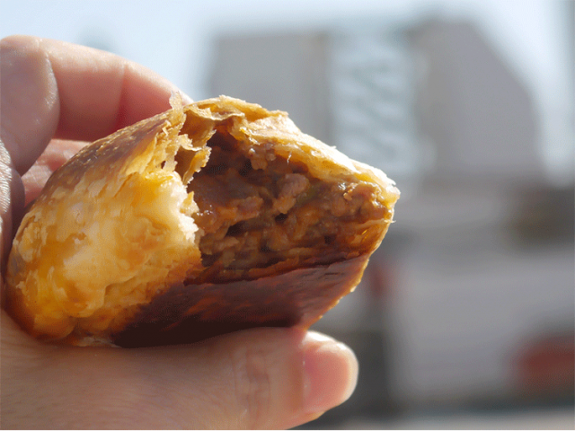

Milanesas

Description
Be happy and eat empanadas
Ingredients
- 12 empanada covers
- 2 cloves of garlic
- 1 pound of ground beef
- 1 onion
- 1/2 red bell pepper
- 1 tomato
- 2 tablespoons of tomato puree
- 1 handful of olives
- In a pot with hot oil add the onion and bell bell pepper. Let them brown for a few minutes and when they are half cooked, add the garlic and a little salt.
- Turn up the heat and add all the minced meat at once. Move the meat so that it does not stick together. When the meat is sealed, add the diced tomato and the 2 tablespoons of tomato puree. Season and mix well. Cover (not completely) and let it cook for half an hour, stirring a little at a time.
- Remove from the heat and let cool in the pot. Add the chopped olives and mix well (in this step you can add anything else you want to add: hard-boiled egg, raisins, potatoes, etc).
- Distribute the filling in the empanada covers, and close with a fold. Here is a video with the different types of repulgue
- Put our empanadas of meat on a plate and bake in a hot oven until golden brown!
Go back to Homepage